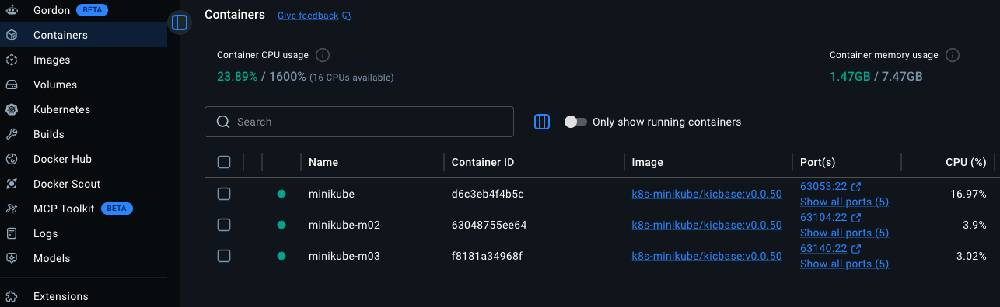

Minikube and Docker
Using containerized deployments with tools like Docker and Minikube gives you a modern way to build, test, ship, and scale applications consistently across environments.
Benefits of Docker Containerization¶
Environment Consistency
A Docker container packages:
- Application code
- Runtime
- Libraries
- Dependencies
- Configuration
Faster Deployment
Containers start in seconds because they:
Share the host OS kernel Are lightweight compared to virtual machines
Benefits:
Faster CI/CD pipelines
Quicker scaling
Faster rollback and recovery
Better Resource Utilization
Compared to traditional VMs:
Virtual Machines Containers Heavy Lightweight Full OS per VM Shared kernel Slower startup Fast startup Higher memory usage Lower memory usage
This allows:
More workloads per server Lower cloud costs Higher efficiency
Portability
Docker containers can run almost anywhere:
Local laptop On-prem servers AWS Azure Google Cloud Kubernetes clusters
Build once → run anywhere.
Simplified Dependency Management
Instead of manually installing:
Java Node.js Python packages System libraries
Everything is defined in a Dockerfile.
Example:
This improves:
Reproducibility Automation Team collaboration
Benefits of Minikube Deployment¶
Kubernetes is powerful but complex. Minikube helps developers run Kubernetes locally.
Learn Kubernetes Safely
Minikube creates a local Kubernetes cluster on your laptop.
You can safely practice:
Pods Deployments Services Ingress Persistent volumes Helm charts
Without paying for cloud infrastructure.
Local Kubernetes Testing
Before deploying to production clusters:
Test manifests locally Debug networking Validate scaling Simulate deployments
This reduces production failures.
Production-Like Environment
Minikube mimics real Kubernetes behavior:
Scheduler API server etcd kubelet
So your local environment becomes very close to:
Amazon Web Services EKS Microsoft AKS Google GKE
This improves deployment confidence.
Great for CI/CD Practice
You can simulate:
Docker builds Kubernetes deployments GitOps workflows Helm releases Canary deployments
Excellent for:
DevOps learning Cloud engineering portfolios Security testing labs
Prerequisites¶
Before installing Minikube. It is important you make sure your system meets the below requirements:
| Requirement | Details |
|---|---|
| Container/VM Environment | Docker, VirtualBox, or similar |
| CPU | Minimum of 2 CPUs |
| Memory | At least 2GB of free memory |
| Disk Space | 20GB of free disk space |
| Internet Connection | Required for downloading Minikube and Kubernetes |
Installation¶
You can use the Minikube guide here:
Or alternativly, if you are using MacOs it is easy as just running:
# Using Homebrew
brew install minikube
# Using the minikube stable release on GitHub
curl -LO https://github.com/kubernetes/minikube/releases/latest/download/minikube-darwin-amd64
sudo install minikube-darwin-amd64 /usr/local/bin/minikube
Kubectl Installation¶
Kubectl is a kubernetes command-line tool that allows you to run commands against a Kubernetes clusters and many other functionalities which we will be going over in the page.
Use the below Kubernetes install documentation to install kubectl.
Docker Desktop Installation¶
You can use the Docker Official guide as a baseline for install Docker Desktop
Docker Desktop installation
Installation Steps for Docker¶
Download Docker Desktop 1. Visit the official Docker website. 2. Click on the appropriate download link for your operating system (Windows, macOS, or Linux).
Install Docker Desktop
For Windows:
1. Run the downloaded installer.
2. Follow the on-screen instructions, ensuring to enable the option for WSL 2 (Windows Subsystem for Linux) if prompted.
For macOS:
1. Open the downloaded .dmg file.
2. Drag the Docker icon to the Applications folder.
3.Launch Docker from the Applications folder and grant necessary permissions.
For Linux:
1. Update your package database.
2. Install prerequisites for HTTPS support.
3. Add Docker’s GPG key and set up the stable repository.
4. Install Docker using your package manager.
Verify Installation
After installation, confirm that Docker is working correctly by running the following command in your terminal or command prompt:
Deploying a Kubernetes Cluster using Minikube¶
Once we have already install both Docker Desktop and Minikube, you can now proceed with the below steps to deploy our k8s cluster locally.
minikube start - To start a minikube k8s cluster
-n=3 - Number of cluster nodes to deploy
-d=docker - Which driver to use. I used Docker.
You have an output like this:
minikube start -n=3 -d=docker
😄 minikube v1.38.1 on Darwin 15.7.2
✨ Using the docker driver based on user configuration
❗ Starting v1.39.0, minikube will default to "containerd" container runtime. See #21973 for more info.
📌 Using Docker Desktop driver with root privileges
👍 Starting "minikube" primary control-plane node in "minikube" cluster
🚜 Pulling base image v0.0.50 ...
🔥 Creating docker container (CPUs=2, Memory=3072MB) ...
🐳 Preparing Kubernetes v1.35.1 on Docker 29.2.1 ...
🔗 Configuring CNI (Container Networking Interface) ...
🔎 Verifying Kubernetes components...
▪ Using image gcr.io/k8s-minikube/storage-provisioner:v5
🌟 Enabled addons: storage-provisioner, default-storageclass
👍 Starting "minikube-m02" worker node in "minikube" cluster
🚜 Pulling base image v0.0.50 ...
🔥 Creating docker container (CPUs=2, Memory=3072MB) ...
🌐 Found network options:
▪ NO_PROXY=192.168.49.2
🐳 Preparing Kubernetes v1.35.1 on Docker 29.2.1 ...
▪ env NO_PROXY=192.168.49.2
🔎 Verifying Kubernetes components...
👍 Starting "minikube-m03" worker node in "minikube" cluster
🚜 Pulling base image v0.0.50 ...
🔥 Creating docker container (CPUs=2, Memory=3072MB) ...
🌐 Found network options:
▪ NO_PROXY=192.168.49.2,192.168.49.3
🐳 Preparing Kubernetes v1.35.1 on Docker 29.2.1 ...
▪ env NO_PROXY=192.168.49.2
▪ env NO_PROXY=192.168.49.2,192.168.49.3
🔎 Verifying Kubernetes components...
🏄 Done! kubectl is now configured to use "minikube" cluster and "default" namespace by default
On your Docker Desktop, you should be able to your deployed Kubernetes cluster under the Containers tab.
{kind=link}
From your terminal, you can now use kubectl in your cluster to get the list of nodes
# Using minikube
minikube status
minikube
type: Control Plane
host: Running
kubelet: Running
apiserver: Running
kubeconfig: Configured
minikube-m02
type: Worker
host: Running
kubelet: Running
minikube-m03
type: Worker
host: Running
kubelet: Running
# Using kubectl
kubectl get nodes
NAME STATUS ROLES AGE VERSION
minikube Ready control-plane 14m v1.35.1
minikube-m02 Ready <none> 13m v1.35.1
minikube-m03 Ready <none> 13m v1.35.1
# Get more information
kubectl get nodes -o wide
NAME STATUS ROLES AGE VERSION INTERNAL-IP EXTERNAL-IP OS-IMAGE KERNEL-VERSION CONTAINER-RUNTIME
minikube Ready control-plane 15m v1.35.1 192.168.49.2 <none> Debian GNU/Linux 12 (bookworm) 6.12.76-linuxkit docker://29.2.1
minikube-m02 Ready <none> 14m v1.35.1 192.168.49.3 <none> Debian GNU/Linux 12 (bookworm) 6.12.76-linuxkit docker://29.2.1
minikube-m03 Ready <none> 14m v1.35.1 192.168.49.4 <none> Debian GNU/Linux 12 (bookworm) 6.12.76-linuxkit docker://29.2.1
Other Minikube cluster deployment types¶
Minikube Dashboard¶
Minikube also offers a dashboard to simplify how your monitor and configure your kubernetes cluster
Just by running minikube dashboard, minikube enables the dashboard add-on, then proceeds to start a proxy server for you to connect securely to the dashboard from your local device.
It then automatically configures a URL and automatically opens your browser window.
minikube dashboard
🔌 Enabling dashboard ...
▪ Using image docker.io/kubernetesui/dashboard:v2.7.0
▪ Using image docker.io/kubernetesui/metrics-scraper:v1.0.8
💡 Some dashboard features require the metrics-server addon. To enable all features please run:
minikube addons enable metrics-server
🤔 Verifying dashboard health ...
🚀 Launching proxy ...
🤔 Verifying proxy health ...
🎉 Opening http://127.0.0.1:63957/api/v1/namespaces/kubernetes-dashboard/services/http:kubernetes-dashboard:/proxy/ in your default browser...
{kind=link}
When Minikube Is NOT Ideal¶
Minikube is great for:
- Learning
- Development
- Testing
But not ideal for:
- Large production workloads
- Multi-node enterprise clusters
- High availability production systems
Production alternatives include:
Amazon EKS
Azure Kubernetes Service
Google Kubernetes Engine
- OpenShift
Best Use Cases¶
Docker + Minikube is excellent for:
- Learning Kubernetes
- DevOps labs
- Cloud security labs
- CI/CD testing
- Microservices development
- Local platform engineering
- Interview preparation
- Portfolio projects
Clean up¶
After testing or practice, you can delete the just deployed cluster by running: minikube delete
minikube delete
🔥 Deleting "minikube" in docker ...
🔥 Deleting container "minikube" ...
🔥 Deleting container "minikube-m02" ...
🔥 Deleting container "minikube-m03" ...
🔥 Removing /Users/cloudguy/.minikube/machines/minikube ...
🔥 Removing /Users/cloudguy/.minikube/machines/minikube-m02 ...
🔥 Removing /Users/cloudguy/.minikube/machines/minikube-m03 ...
💀 Removed all traces of the "minikube" cluster.